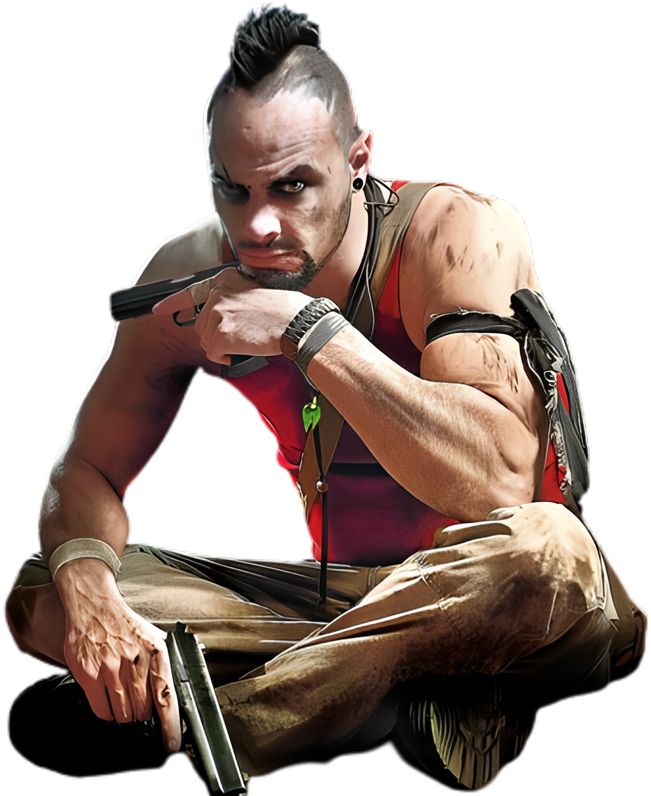

Far Cry 3 segue Jason Brody, um turista que se encontra preso em uma ilha tropical infestada de piratas e psicopatas. Jason deve se aliar aos nativos para salvar seus amigos e derrotar o vilão Vaas Montenegro. A jornada de Jason para se tornar um guerreiro é uma história de sobrevivência e autodescoberta.
